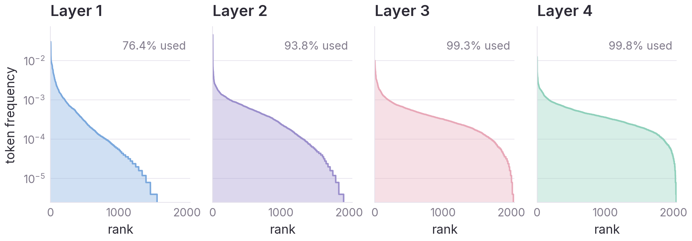
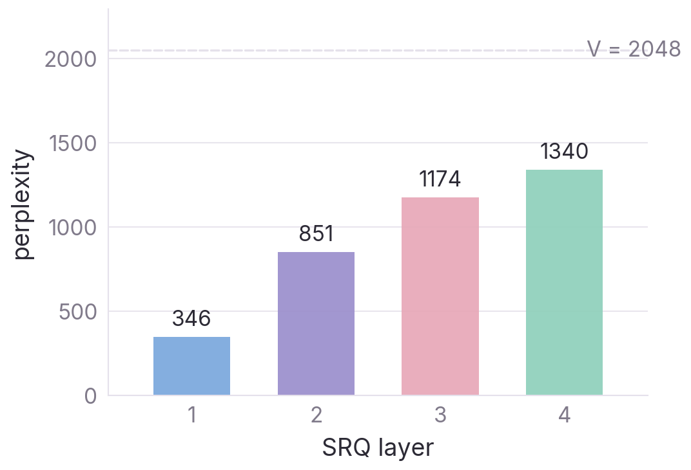
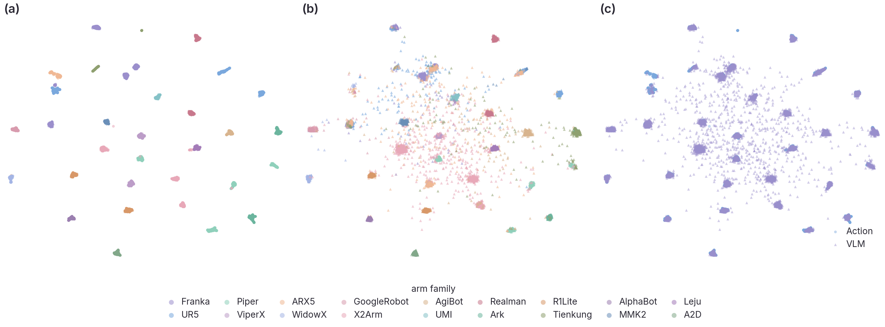

Existing action tokenizers compress motion into discrete codes — but the codes are opaque to the surrounding vision-language model. X-Tokenizer reframes tokenization as semantic interface learning: we co-train a multimodal encoder, a Semantic Residual Quantizer (SRQ), and a paired decoder so that the top-level codes q₀ are simultaneously grounded in language and faithful to motion.
Pretraining at scale — 2.4 M trajectories, 2.0 B action frames, 17 arm families — yields one frozen tokenizer that reuses across (i) RoboTwin 2.0 dual-arm benchmarks, (ii) 5-arm cross-embodiment joint training, and (iii) real-world tabletop manipulation, while leaving the host VLM's reasoning ability intact.
On RoboTwin Hard the dual-arm setting degrades only −3.8 (vs. −5.9 for π0.5). Cross-embodiment joint training lifts Hard by +10.4. Real-world average is 77.4 across 7 tasks with no per-task tuning. Against FAST, multimodal grounding gains +13.5 % and long-horizon execution gains +8.25.
Each action chunk is aligned to the VLM’s downsampled features at the same timestep — not raw pixels. Context comes from tri-view video (same temporal stride), the task-level language instruction, and fine-grained sub-task instructions. Contrastive InfoNCE pulls the action stream into the VLM’s compressed representation space.
4-layer residual VQ on the aligned latent. Top code q₀ captures coarse intent; residuals q₁₋₃ absorb continuous kinematic detail. Codebook usage is kept wide via EMA reset.
Primary: masked action modeling reconstructs the original continuous action chunk. Auxiliary: a lightweight head predicts next-frame VLM features as extra supervision — keeping codes grounded in the VLM space without shifting the main objective away from action reconstruction.



@misc{kang2026xtokenizermultimodalactiontokenizer, title = {X-Tokenizer: A Multimodal Action Tokenizer for Vision-Language-Action Pretraining}, author = {Xirui Kang and Yanpei Shi and Lucy Liang and Roy Gan and Dongxiu Liu and Pushi Zhang and Danpeng Chen and Xiaoyi Qin and Yinan Zheng and Jinliang Zheng and Hao Wang and Xianyuan Zhan and Hang Su}, year = {2026}, eprint = {2606.14752}, archivePrefix = {arXiv}, primaryClass = {cs.CV}, url = {https://arxiv.org/abs/2606.14752}, }